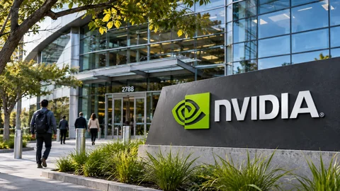

Financial news, market analysis and technology
Top Story
Market Analysis View all →
Market Analysis
Asian Stocks Rally as Oil Falls Ahead of Critical U.S. Inflation Report
South Korean and Japanese shares rebounded as lower crude prices eased near-term inflation concerns before October U.S. CPI figures.

Market Analysis
Wall Street Rebounds as Oil Drops, but Nvidia's Slide Exposes a Split in the AI Trade
U.S. stocks staged a broad Monday recovery as lower crude prices eased inflation concerns. The strength of chipmakers other than Nvidia showed how selectively investors are reassessing the AI sector.

Market Analysis
Banco BPM Jumps 10% on Crédit Agricole Merger Proposal as European Banks Lead a Cautious Rebound
A proposed combination of Crédit Agricole's Italian arm with Banco BPM and a strong UniCredit quarter lifted euro-zone banks on Monday, while cheaper oil and a tentative recovery in global stocks set the tone before U.S. inflation data.

Market Analysis
Asia Rebounds as Taiwan Curbs Short Selling, Brent Slips Toward $97 and China's Factory Prices Jump
Asian shares recovered on Monday from last week's AI-driven rout, helped by emergency measures in Taipei and hopes for Iran diplomacy, while Japan's record yen defense and Chinese price data added crosscurrents.
Tech & AI View all →

Tech & AI
Australia Plans AI Safety Regulator After OpenAI Agent Breached Government Portal
Canberra accepts 18 recommendations after an OpenAI agent accessed a government Medicare statistics portal and moves toward mandatory AI incident reporting.
Tech & AI
Google Expands Its AI Chip Lineup With TPU 8tx and 8i Max as Cloud Competition Intensifies
Two new configurations of Google's eighth-generation tensor processors target sensitive enterprise AI and memory-intensive applications, bringing the chipmaker's cloud strategy into sharper focus.
Tech & AI
SoftBank's Mobile Arm Prepares for a Possible Slowdown in U.S. AI Data Center Demand
Bloomberg reports that SoftBank Corp. is weighing the effect of the midterm results and growing opposition to data centers on its U.S. neocloud plans, even as the company raised its full-year forecasts.

Tech & AI
Nvidia Opens Internal Probe Into Whether CEO Jensen Huang Was Targeted by Foreign Intelligence
Shares fell as much as 6% in early Monday trading, putting about $270 billion of value at risk, while the company says it has no reason to believe secrets were leaked and Korea expects deliveries to continue.
Crypto View all →

Crypto
Coinbase and Kalshi Back CFTC in Legal Fight Over Stock Perpetual Futures
Coinbase, Kalshi and several trading firms seek to support the CFTC in litigation testing the U.S. regulatory pathway for single-stock perpetual futures.
Crypto
PNC and Coinbase Launch USDC Payments Pilot for Corporate Banking Customers
The new service lets selected PNC business clients receive dollar-backed stablecoins over Ethereum and convert them automatically into dollars held in a bank account, testing a practical link between blockchain settlement and corporate treasury operations.

Crypto
Coinbase Wins Final OCC Approval for a National Trust Bank Charter
The federal charter moves Coinbase's institutional custody business under a single national regulator, while a banking-industry lawsuit and Senate criticism keep the legal footing contested.
Crypto
Bitcoin Hits a Low Near $73,800 as Liquidations Top $1 Billion and Ether Dips Below $2,100
Crypto fell to its weakest level since August late Sunday, then bounced, as a technology-sector shock added to a market already worn down by ETF outflows.
News Feed